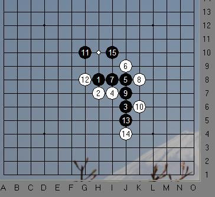

全少赛【茗弈】的内战－纪香（白）VS王姿雯（黑）
#1 全少赛【茗弈】的内战－纪香（白）VS王姿雯（黑）作者：黄药师 发表时间：2009-8-18 18:23:21
有请智慧与美貌的化身－－小刀点评！
这是儿童女子组第6轮的比赛
此前王姿雯是5连胜，势头正盛，而纪香第二轮输给了海宁杨鑫妮，上轮“小骗”北京朱立巍，以四胜一负重新回到第一集团。
纪香开局－疏星，王姿雯交换
对局如下：
=======上图对应的爱五子棋谱代码如下，以便你拆解：========
h8h7j6i7j8j9i8k8j7k6i10g8i9k7j5j4k9j10i11i12h10g11j12g9g10f11e10f10e9g7e7e11d11i5h6i3k4e6f6f7d5g6g5i4i6h5
======================================================
#2 Re:全少赛【茗弈】的内战－纪香（白）VS王姿雯（黑）作者：茗弈小刀 发表时间：2009-8-19 21:08:05
呵呵，我只能算陋評吧，愿盡綿薄之力些許給她們一點幫助。疏星感覺總體還是白好下，但有一些進攻性的棋手仍偏愛執黑，看來王姿雯就是。這個5呢，不太好下，但也有的棋手喜歡，說法不一。如果這個6：
=======上图对应的爱五子棋谱代码如下，以便你拆解：========
h8h7j6i7j8i8i9g7j7
======================================================
以上為這個6最常見變化，黑白都有机会，但感覺白的外勢不太好。我們的紀香小朋友選擇的這個6，目前比較流行，但必須要有較強控制力才敢下，因為優勢一下子是體會不出來的。7手正常，8正確。9手可以考慮防在8斜下，檔這個活2（推薦）.當然黑棋這個9也是穩妥的。11手，如圖一：

這樣下感覺比較好,黑優。王姿雯這樣雖然直接，但似乎忽略了白的一些東西。。。。而白棋顯得很沉著，這幾手都防得很好，以靜制動。
13手更令人大跌眼鏡，昏招！！！14如圖二即殺：
那么黑棋這里怎么下比較好呢？不妨試試以下方法：圖三

稍微遺憾實戰中由于紀香可能還是比較緊張，這里漏殺了。王姿雯還是很敏銳的察覺到了這點，15手先沖再防。那么現在的局面又回到平衡狀態了，這里也是對2個小選手的嚴峻考驗。
18顯得謹慎，19，21，23以為機會來了進攻。其實不然，王姿雯此時已心急意亂，已落一子，敵增一兵，這么簡單的道理，已拋到腦后。結果可想而之非但沒攻出來反而給對手制造了機會，白棋不但搶到左邊的外勢，還連先手一同搬回跳活三！黑難受了，25無奈之舉，26繼續施壓！27，29防守同時試圖反控制左邊外勢。可惜，大勢已去。30手紀香殺著，(30直接在27上边也可）后边的杀也很漂亮，思路非常好！
由于2个小朋友都算我半个徒弟，这里首先要表扬纪香，这次比赛你非常棒！给南通五子走向实战比赛打响了第一枪！！！棋风也很稳重，计算也不错，大局观和下棋思路值得其他小朋友们学习。
这里呢王姿文，以前还是很乖的，也比较肯学，常常会找我下棋什么的，这一年多少于见到了。这次比赛后，希望你深思一下，为什么输？是自己骄傲了还是什么？这盘棋我看出你比较浮躁，比如23手在上边挡住12 和2的活二，白就没有杀了。是自己给对手创造了杀自己的机会。乱攻，这点必须改，在攻击的时候一定要算对手的反或挡产生的结果。建议最近多练习防守。
茗弈披挂四征战，五子纵横谁与堪？相信我们的“好女儿”胜不骄，败不馁。希望2位小朋友继续努力，下次比赛你们赛场还会再见！
#3 Re:全少赛【茗弈】的内战－纪香（白）VS王姿雯（黑）作者：黄药师 发表时间：2009-8-19 21:30:19
认真的看玩小刀的评析，已落一子，敵增一兵，這么簡單的道理，已拋到腦后。結果可想而之非但沒攻出來反而給對手制造了機會
貌似听谁说的，疏星如果黑棋太急着取胜，往往死得难看？是不是啊？
#4 Re:全少赛【茗弈】的内战－纪香（白）VS王姿雯（黑）作者：小龙女 发表时间：2009-8-19 21:47:17
谢谢小刀姐姐的的点评。回忆起那一轮比赛，我不禁打颤。当时特别紧张，有些不知所措，便不断地在喝顾老师给我倒的水， 拿杯子的手都是颤抖的。可我眼睛一秒也没没离开过棋盘，一直思考着，真怕会出现失误。直到最后，我看到杀了，原本平静的心顿时狂跳，脸涨得通红，把杀看了一遍又一遍。简单的3步杀已摆在眼前，可我还是看了一遍又一遍，大概过了10分钟，我才杀的。
拿杯子的手都是颤抖的。可我眼睛一秒也没没离开过棋盘，一直思考着，真怕会出现失误。直到最后，我看到杀了，原本平静的心顿时狂跳，脸涨得通红，把杀看了一遍又一遍。简单的3步杀已摆在眼前，可我还是看了一遍又一遍，大概过了10分钟，我才杀的。 (*^__^*) 嘻嘻……太紧张、激动了。
(*^__^*) 嘻嘻……太紧张、激动了。
真希望还能有机会参加下一届的比赛，我一定会努力的！
［ 黄药师 于 2009-8-19 21:50:31 时花20金币送鲜花一朵］
［ 黄药师 于 2009-8-19 21:51:06 时奖励此帖[金币加 20 威望加1］
［ 茗弈小刀 于 2009-8-19 21:56:39 时花20金币送鲜花一朵］
#5 Re:Re:全少赛【茗弈】的内战－纪香（白）VS王姿雯（黑）作者：小龙女 发表时间：2009-8-19 22:10:52
#6 Re:全少赛【茗弈】的内战－纪香（白）VS王姿雯（黑）作者：江南新绿 发表时间：2009-8-19 22:42:43
两个小棋手都下的很好。实战13手虽然是局部的形，但是对手已经封住了几个角度，这样行棋比较生硬。39手防守也是过于注重棋型而漏了对手的杀。所以希望王姿雯的黑棋以后能够下的更为多变，计算更为深入。
［ 茗弈小刀 于 2009-8-20 17:19:04 时花20金币送鲜花一朵］
#7 Re:全少赛【茗弈】的内战－纪香（白）VS王姿雯（黑）作者：高星 发表时间：2009-8-20 14:04:53
计香MM有没有照片的啊#8 Re:全少赛【茗弈】的内战－纪香（白）VS王姿雯（黑）作者：茗弈小刀 发表时间：2009-8-20 17:19:45
谢谢新绿老师指点#9 Re:全少赛【茗弈】的内战－纪香（白）VS王姿雯（黑）作者：启蒙 发表时间：2009-8-20 21:38:24
替港澳台同胞谢谢小刀老师！［ 茗弈小刀 于 2009-8-20 22:21:03 时花20金币送鲜花一朵］